Halogen Derivatives 1
Topic 11.5 · Halogen Derivatives Part 1
On this page
Halogen derivatives
Replace a hydrogen atom of a hydrocarbon by a halogen atom and you get a halogen derivative. If the halogen is on an sp3 carbon of a chain, the compound is a halogenoalkane, CnH2n+1X (X = F, Cl, Br or I). If it is on a benzene ring, the compound is a halogenoarene, such as chlorobenzene, C6H5Cl. As in Topic 11.3, a halogenoalkane is classed as primary, secondary or tertiary by the carbon that carries the halogen: the number of other carbon atoms bonded to it.
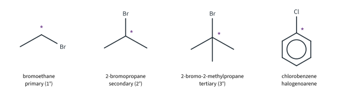
Halogenoalkanes are made from alkanes by free-radical substitution and from alkenes by adding HBr (Topic 11.4 Part 1), and from alcohols (Topic 11.6 Part 1). They matter because the C–X carbon is a handle: a nucleophile can swap the halogen for an –OH, a –CN or an –NH2 group, and a base can remove HX to make an alkene. So a halogenoalkane is often the half-way house in a synthesis. This Part covers the reactions of halogenoalkanes that 9476 names (11.5(a)), what happens at a chiral centre when they react (11.5(b)), how to tell halogen compounds apart (11.5(c)), and the fluorine compounds that are useful because they hardly react at all, with what they have done to the ozone layer (11.5(d), (e)).
These are the compounds used most in this Part (boiling points are literature values):
| Compound | Formula | Class | b.p. / °C |
|---|---|---|---|
| bromoethane | CH3CH2Br | primary | 38 |
| 2-bromopropane | CH3CHBrCH3 | secondary | 59 |
| 2-bromobutane | CH3CH2CHBrCH3 | secondary (chiral) | 91 |
| 1-chlorobutane | CH3CH2CH2CH2Cl | primary | 78 |
| 1-bromobutane | CH3CH2CH2CH2Br | primary | 102 |
| 1-iodobutane | CH3CH2CH2CH2I | primary | 130 |
| chlorobenzene | C6H5Cl | halogenoarene | 132 |
Down the 1-halogenobutanes the boiling point rises, because the larger halogen atom has more electrons and the id-id attractions are stronger (Topic 2). Bromoethane boils at only 38 °C, which is why it is heated under reflux in the reactions below: otherwise it would boil away before it reacted.
The carbon–halogen bond
Everything a halogenoalkane does starts at the C–X bond. The halogen is more electronegative than carbon, so the bond is polar, Cδ+–Xδ−, and the δ+ carbon attracts nucleophiles (Topic 11.3). But polarity does not decide how fast the bond reacts. C–F is the most polar bond, yet fluoroalkanes are the least reactive. The order of reactivity is
R–I > R–Br > R–Cl ≫ R–F
and it follows the bond energies (Data Booklet): the weaker the bond, the faster it breaks. You met this argument in Topic 2 Part 1 and in Topic 11.3.
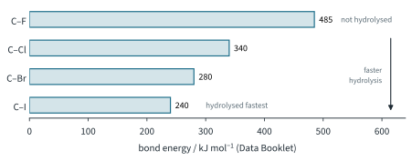
Nucleophilic substitution of bromoethane
Bromoethane is a primary halogenoalkane, so it reacts with nucleophiles by SN2 (Topic 11.3, Fig 9). The nucleophile uses a lone pair to attack the δ+ carbon from the side opposite the Br atom; the new bond forms as the C–Br bond breaks, in one step, and Br− leaves. The rate equation has both species in it (Topic 8 Part 1):
rate = k[CH3CH2Br][nucleophile]
9476 names three nucleophiles. They differ in the atom that donates the lone pair, so they put three different groups onto the carbon chain (Fig 3).
With hydroxide ions: hydrolysis
Reagent and conditions: NaOH(aq), heat (under reflux).
CH3CH2Br + NaOH → CH3CH2OH + NaBr
or, as an ionic equation, CH3CH2Br + OH− → CH3CH2OH + Br−
The lone pair on the O of OH− attacks, and the product is ethanol. Because the product is an alcohol and the reagent is aqueous, this is called the hydrolysis of bromoethane. Water on its own does the same job, but much more slowly, because H2O is a weaker nucleophile than OH−: CH3CH2Br + H2O → CH3CH2OH + H+ + Br−. The silver nitrate test below relies on this slow reaction.
With cyanide ions: nitriles
Reagent and conditions: KCN in ethanol, heat (under reflux).
CH3CH2Br + KCN → CH3CH2CN + KBr
or CH3CH2Br + CN− → CH3CH2CN + Br−
The cyanide ion attacks through the lone pair on its carbon atom, so a new C–C bond forms. The product, propanenitrile, has three carbon atoms: one more than bromoethane. This is one of the few reactions in 9476 that lengthens the carbon chain, which is why it is so useful in synthesis. The –C≡N group can then be hydrolysed to a carboxylic acid (propanoic acid, Topic 11.8 Part 1) or reduced to an amine (propylamine (propan-1-amine), Topic 11.9 Part 1).
Why ethanol and not water? In water, OH− ions (and the water itself) would compete with CN− as nucleophiles, and some of the bromoethane would end up as ethanol instead.
With ammonia: primary amines
Reagent and conditions: excess NH3 in ethanol, heat in a sealed tube.
CH3CH2Br + 2NH3 → CH3CH2NH2 + NH4Br
The reaction happens in two steps. First the lone pair on the N of NH3 attacks the δ+ carbon (SN2), giving the ethylammonium ion; then a second NH3 molecule removes H+ from it:
CH3CH2Br + NH3 → CH3CH2NH3+ + Br−
CH3CH2NH3+ + NH3 ⇌ CH3CH2NH2 + NH4+
The product is ethylamine (ethanamine), a primary amine. Two of the conditions need explaining.
- Why a sealed tube? Ammonia boils at −33 °C (literature value). Heated in an open flask, it would simply boil out of the ethanol. In a sealed tube it stays in solution, under pressure (9476: "heated under pressure"). Ethylamine itself boils at 17 °C, so it is kept in too.
- Why excess ammonia? The product, ethylamine, also has a lone pair on its N atom, so it is a nucleophile too. It can attack another bromoethane molecule, giving diethylamine, (CH3CH2)2NH, and so on, up to the tetraethylammonium ion, (CH3CH2)4N+. With a large excess of NH3, a bromoethane molecule is far more likely to meet an NH3 molecule than an ethylamine molecule, so the primary amine is the main product (Topic 11.9 Part 1).
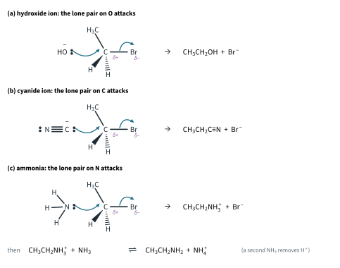
Worked example 1
Give the reagents and conditions, and write a balanced equation, for converting bromoethane into (a) ethanol, (b) propanenitrile, (c) ethylamine.
(To answer this, look at the group the product has in place of Br: –OH, –CN or –NH2. That tells you which nucleophile supplies it.)
(a) NaOH(aq), heat: CH3CH2Br + NaOH → CH3CH2OH + NaBr
(b) KCN in ethanol, heat: CH3CH2Br + KCN → CH3CH2CN + KBr
(c) excess NH3 in ethanol, heat in a sealed tube: CH3CH2Br + 2NH3 → CH3CH2NH2 + NH4Br
| Nucleophile | Reagent and conditions | Atom donating the lone pair | Product | New bond |
|---|---|---|---|---|
| OH− | NaOH(aq), heat | O | ethanol, CH3CH2OH | C–O |
| CN− | KCN in ethanol, heat | C | propanenitrile, CH3CH2CN | C–C |
| NH3 | excess NH3 in ethanol, heat in a sealed tube | N | ethylamine (ethanamine), CH3CH2NH2 | C–N |
Elimination
Change the solvent from water to ethanol and the same reagent, sodium hydroxide, does something different. With 2-bromopropane:
Reagent and conditions: NaOH in ethanol, heat.
CH3CHBrCH3 + NaOH → CH2=CHCH3 + NaBr + H2O
or CH3CHBrCH3 + OH− → CH2=CHCH3 + Br− + H2O
Here OH− acts as a base, not as a nucleophile. It removes an H+ from a carbon next to the C–Br carbon, the Br leaves as Br−, and a C=C double bond forms between the two carbons. Overall the atoms H and Br are removed from neighbouring carbons: an elimination of HBr. The product, propene, is a gas (b.p. −48 °C, literature value): it bubbles off and can be collected, and it decolourises orange Br2(aq) (bromine water), the test for C=C (Topic 11.4 Part 1).1
Only one alkene can form here. The two carbons next to C2 are both CH3 groups, so it does not matter which one loses the H+. You do not need the mechanism of elimination for 9476; Fig 4(b) shows it for interest.
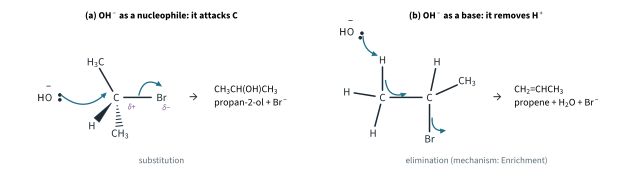
Substitution or elimination?
Both reactions usually happen to some extent; the conditions decide which one wins:
| Substitution favoured | Elimination favoured | |
|---|---|---|
| Solvent | water: NaOH(aq) | ethanol: NaOH in ethanol |
| Heating | heat gently | heat strongly |
| Halogenoalkane | primary | tertiary (secondary in between) |
| What OH− does | attacks the δ+ carbon (nucleophile) | removes H+ from the next carbon (base) |
| Product from 2-bromopropane | propan-2-ol, CH3CH(OH)CH3 | propene, CH2=CHCH3 |
Worked example 2
2-Bromopropane is heated (a) with NaOH(aq), (b) with NaOH in ethanol. Name the main organic product in each case, write an equation, and state the role of the hydroxide ion. How could you show that (b) gives an alkene?
(a) Propan-2-ol, by nucleophilic substitution: CH3CHBrCH3 + OH− → CH3CH(OH)CH3 + Br−. OH− is a nucleophile: it attacks the δ+ carbon.
(b) Propene, by elimination: CH3CHBrCH3 + OH− → CH2=CHCH3 + Br− + H2O. OH− is a base: it removes H+ from a carbon next to the C–Br carbon.
Bubble the gas given off into Br2(aq) (bromine water): the orange colour disappears (decolourised), showing a C=C bond.
Worked example 3 (Further example)
2-Bromobutane is heated with NaOH in ethanol. Explain why three different alkenes are formed.
(This time the two carbons next to C2 are different: C1 is a CH3 group and C3 is a CH2 group.) If H+ is removed from C1, the double bond forms between C1 and C2: but-1-ene. If it is removed from C3, the double bond is between C2 and C3: but-2-ene. But-2-ene has two different groups (H and CH3) on each carbon of the C=C, so it exists as cis and trans isomers (Topic 11.2). That makes three alkenes, all C4H8.2
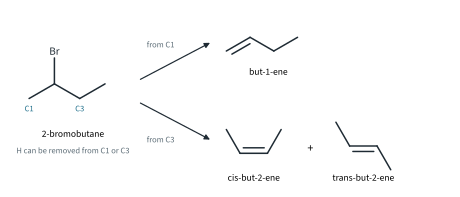
Stereochemistry of nucleophilic substitution
If the carbon that carries the halogen is a chiral centre, a sample of one enantiomer of the halogenoalkane is optically active (Topic 11.2). What happens to that centre when the halogen is replaced depends on the mechanism. Topic 11.3 gave a preview in its table of SN1 and SN2; here it is in full.
SN2: inversion of configuration
2-Bromobutane has a chiral centre at C2 (H, Br, CH3, C2H5). Take one enantiomer and heat it with concentrated NaOH(aq). It is a secondary halogenoalkane, so it could react by either mechanism, but with a high concentration of a strong nucleophile such as OH−, SN2 wins.
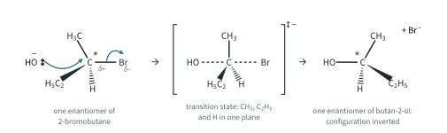
The OH− ion attacks from the side opposite the Br atom. In the transition state the carbon is partly bonded to both O and Br, and the other three groups (CH3, C2H5 and H) lie in one plane. As the Br leaves, these three groups flip over to the other side, like an umbrella blown inside out in the wind. The OH ends up on the opposite side from where the Br was: the product has the opposite configuration. This is inversion of configuration.
One enantiomer goes in, and one enantiomer of butan-2-ol comes out, so the product is optically active. You cannot predict from the drawing which way it rotates plane-polarised light, or whether that is the same way as the starting material: the direction of rotation is measured, not deduced.
SN1: racemisation
3-Bromo-3-methylhexane, CH3CH2CH2C(CH3)BrCH2CH3, is a tertiary halogenoalkane whose C3 carries four different groups (Br, CH3, C2H5 and C3H7), so it is chiral. Tertiary halogenoalkanes react by SN1 (Topic 11.3, Fig 10):
CH3CH2CH2C(CH3)BrCH2CH3 → CH3CH2CH2C+(CH3)CH2CH3 + Br− (slow)
CH3CH2CH2C+(CH3)CH2CH3 + OH− → CH3CH2CH2C(CH3)(OH)CH2CH3 (fast)
rate = k[C7H15Br]
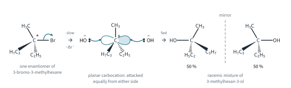
In the slow step the C–Br bond breaks on its own. The carbocation is sp2 and planar, with an empty p orbital above and below the plane: the chiral centre has gone. In the fast step OH− (or a water molecule) can attack either face of the plane, and it does so with equal probability. Attack from one face gives one enantiomer of 3-methylhexan-3-ol; attack from the other face gives its mirror image. The product is a 50 : 50 mixture of the two enantiomers: a racemic mixture, which is optically inactive because the two rotations cancel. This is racemisation.3
Worked example 4
A chemist has one enantiomer each of two chiral halogenoalkanes, 2-bromobutane (A) and 3-bromo-3-methylhexane (B), and hydrolyses each with NaOH(aq). The product from A rotates plane-polarised light, and doubling [OH−] doubles the rate. The product from B does not rotate plane-polarised light, and doubling [OH−] has no effect on the rate. Explain both observations.
(To answer this, use both clues: the rate equation tells you the mechanism, and the mechanism tells you the stereochemistry.)
A: the rate depends on [OH−], so OH− is in the rate-determining step: rate = k[RBr][OH−], SN2. Back-side attack inverts the configuration at C2, so one enantiomer of 2-bromobutane gives one enantiomer of butan-2-ol: optically active.
B: the rate does not depend on [OH−]: rate = k[RBr], SN1. B is tertiary, so it forms a stable tertiary carbocation, which is planar. OH− attacks both faces equally, giving a racemic mixture of 3-methylhexan-3-ol: no overall rotation.
Telling halogen derivatives apart
Which halogen? Hydrolyse, then test for the halide ion
A halogenoalkane does not give a precipitate with silver nitrate directly: the halogen is covalently bonded, not a free X− ion. So first set the halide ion free by hydrolysis, then test for it. This is the method 9476 names:
- Heat the halogenoalkane with NaOH(aq). Hydrolysis releases the halide ion: RX + OH− → ROH + X−.
- Cool the mixture.
- Acidify with dilute HNO3(aq). This removes the excess OH−: H+(aq) + OH−(aq) → H2O(l). Otherwise OH− would react with the silver ions and give a brown precipitate of silver(I) oxide, which hides the colour you are looking for: 2Ag+(aq) + 2OH−(aq) → Ag2O(s) + H2O(l). Do not use hydrochloric acid: it adds Cl− ions, which would give a white precipitate of AgCl whatever the halogenoalkane was.4
- Add AgNO3(aq). A precipitate of the silver halide forms: Ag+(aq) + X−(aq) → AgX(s).
- Add NH3(aq) to confirm which halide it is (Topic 10 Part 3).
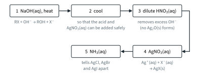
The observations, in the words of the Data Booklet:
| Halogenoalkane | Precipitate with AgNO3(aq) | Then add NH3(aq) |
|---|---|---|
| chloroalkane (Cl− released) | white, AgCl | soluble |
| bromoalkane (Br− released) | pale cream, AgBr | partially soluble |
| iodoalkane (I− released) | yellow, AgI | insoluble |
| fluoroalkane | none |
A fluoroalkane gives no precipitate: the C–F bond is not hydrolysed under these conditions, and silver fluoride is soluble in water anyway.
How fast? Silver nitrate in ethanol
The second method, which you met in Topic 11.3, compares the rates. Warm each halogenoalkane with AgNO3(aq) and ethanol (the ethanol dissolves the halogenoalkane so that it mixes with the aqueous silver nitrate). Water is the nucleophile, and the halide ions it releases precipitate as soon as they form: RX + H2O → ROH + H+ + X−, then Ag+(aq) + X−(aq) → AgX(s). The faster the C–X bond breaks, the sooner the precipitate appears. Typical results (illustrative times, warm water bath; real times depend on the amounts and the temperature):
| Compound | Precipitate | Appears |
|---|---|---|
| 1-iodobutane | yellow, AgI | within about 1 minute (first) |
| 1-bromobutane | pale cream, AgBr | after about 5 minutes (second) |
| 1-chlorobutane | white, AgCl | faint, after about 20 minutes (last) |
| 1-fluorobutane | none | no change after an hour (it boils at 32 °C, so keep it from evaporating, e.g. under a reflux condenser) |
| chlorobenzene | none | no change after an hour |
The order, I first and Cl last, is the order of the C–X bond energies, 240 < 280 < 340 kJ mol−1 (Fig 2).
Further example. The class of the halogenoalkane matters as well as the halogen. 2-Chloro-2-methylpropane, (CH3)3CCl, gives a white precipitate of AgCl within about a minute, long before 1-chlorobutane. It is tertiary, so it reacts by SN1 through a stable tertiary carbocation (Topic 11.3, Fig 4), much faster than the primary chloride can.
Halogenoalkanes and halogenoarenes
Chlorobenzene gives no precipitate by either method, even after boiling with NaOH(aq), while 1-chlorobutane gives white AgCl. So either test tells a halogenoalkane from a halogenoarene. The reasons are in Topic 11.3 (Fig 5): a lone pair on the Cl atom overlaps with the delocalised π system of the ring, so the C–Cl bond is stronger and less polar than in a chloroalkane; the ring blocks the back-side attack that SN2 needs; and the π electron cloud repels an approaching nucleophile. (Acyl chlorides, by contrast, are hydrolysed even faster than chloroalkanes: Topic 11.8 Part 2.)
Worked example 5
Three unlabelled bottles contain 1-chlorobutane, 1-iodobutane and chlorobenzene. Describe how you would identify each.
Heat a few drops of each with NaOH(aq) under reflux, cool, acidify with dilute HNO3(aq), then add AgNO3(aq).
- White precipitate, which dissolves in NH3(aq): AgCl, so the bottle held 1-chlorobutane.
- Yellow precipitate, which does not dissolve in NH3(aq): AgI, so the bottle held 1-iodobutane.
- No precipitate: no halide ion was released, so the bottle held chlorobenzene, the halogenoarene.
Worked example 6 (Further example)
1.37 g of a bromoalkane, CnH2n+1Br, was completely hydrolysed, and the solution was acidified and treated with excess AgNO3(aq). 1.88 g of AgBr (Mr 187.8) was collected. Find the molecular formula of the bromoalkane, and suggest which of its isomers would give a precipitate fastest with AgNO3(aq) and ethanol.
(To answer this, notice that each RBr molecule gives one Br− ion, and so one AgBr.)
n(AgBr) = 1.88 / 187.8 = 1.001 × 10−2 mol = n(RBr)
Mr(RBr) = 1.37 / (1.001 × 10−2) = 136.9 (keep the unrounded value of n)
14n + 1.0 + 79.9 = 136.9 so n = 4: C4H9Br
C4H9Br has four constitutional isomers (Topic 11.2, Fig 13). The tertiary one, 2-bromo-2-methylpropane, reacts fastest, by SN1 through the stable tertiary carbocation.
Fluoroalkanes and fluorohalogenoalkanes
At the other end of the reactivity scale are the fluorine compounds. The C–F bond, at 485 kJ mol−1, is the strongest bond between carbon and a halogen, and stronger even than C–H (410) and C–C (350 kJ mol−1, all Data Booklet). It is not hydrolysed, and it is not attacked by acids, alkalis or most oxidising agents. The small fluorine atoms also pack closely round the carbon chain and shield it from attack. Compounds in which most or all of the hydrogen atoms are replaced by halogens do not burn either. 9476 asks you to link the uses of fluoroalkanes (only F) and fluorohalogenoalkanes (F and another halogen) to this inertness.
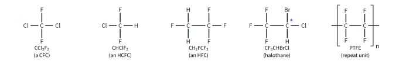
| Compound | Use | Property that makes it suitable |
|---|---|---|
| CFCs, e.g. CCl2F2 | refrigerants, aerosol propellants, blowing agents for foams, cleaning solvents (production phased out) | unreactive, non-toxic, non-flammable, volatile |
| HCFCs, e.g. CHClF2 | refrigerant in air-conditioning (being phased out) | as for CFCs |
| HFCs, e.g. CH2FCF3 | refrigerant in fridges and car air-conditioning; propellant in medical inhalers | as for CFCs, and no chlorine |
| PTFE, –(CF2–CF2)n– | non-stick coatings, seals, gaskets, linings, laboratory ware | resists almost all chemicals; low friction; usable to about 260 °C |
| halothane, CF3CHBrCl | inhalation anaesthetic (now largely replaced by other fluorinated compounds) | unreactive, non-flammable, volatile (b.p. 50 °C) |
| halons, e.g. CBrF3 | fire extinguishers (now restricted: they also damage the ozone layer) | non-flammable, dense vapour |
(Temperatures and boiling points are literature values. PTFE, poly(tetrafluoroethene), is an addition polymer: Topic 11.10.)
CFCs and the ozone layer
The ozone layer is a region of the stratosphere, mostly about 15 to 35 km up, where ozone, O3, absorbs most of the Sun's harmful ultraviolet light: all of the UV-C (wavelengths below 280 nm) and most of the UV-B (280 to 315 nm) (literature values). Chlorofluorocarbons, CFCs, compounds of carbon with only chlorine and fluorine such as CCl2F2, were the ideal refrigerants and propellants because they are so unreactive. That same inertness is the problem.
- They reach the stratosphere. Nothing in the lower atmosphere (the troposphere) removes CFCs: they do not react with water, oxygen or the reactive OH radicals there, and they are not washed out by rain. So they drift up into the stratosphere over a few years and stay for decades (CCl2F2 has an atmospheric lifetime of about 100 years, literature value).
- UV light releases chlorine atoms. In the stratosphere the UV light is energetic enough to break CFC molecules up, releasing chlorine atoms. Chlorine atoms catalyse the breakdown of ozone to oxygen, 2O3 → 3O2, and are not used up, so one chlorine atom can destroy many thousands of ozone molecules (up to about 100 000 is often quoted) before it is removed. You do not need the mechanism for 9476.
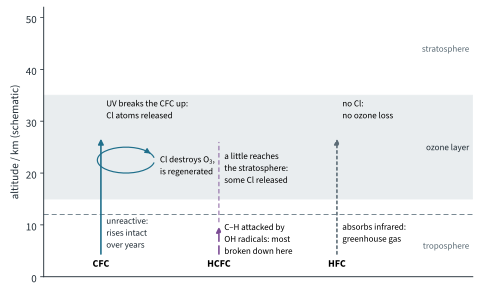
Further example. Which bond breaks? The C–Cl bond (340 kJ mol−1, Data Booklet) is the weakest bond in a CFC (C–F is 485 kJ mol−1), so it is the one that UV light breaks, homolytically, giving free chlorine atoms (Topic 11.3). The Enrichment box below shows the cycle.
Less ozone means more UV-B reaches the ground: more skin cancers and cataracts, and damage to crops and to the plankton at the base of ocean food chains. The thinning is worst over Antarctica, where an "ozone hole" forms each southern spring (first reported in 1985). The Montreal Protocol (1987) phased out the production of CFCs (in developed countries by 1996, worldwide by 2010). The ozone layer is now slowly recovering, and is expected to be back to its 1980 state around the middle of this century (literature).
Replacements: HCFCs and HFCs
The first replacements kept the useful properties but changed the formula.
- HCFCs (hydrochlorofluorocarbons), such as CHClF2, contain a C–H bond. OH radicals in the troposphere can attack it, so most HCFC molecules are broken down low down (lifetime about 12 years) and much less reaches the stratosphere. But they still contain chlorine, so the part that does get there still destroys ozone, only less. Their ozone depletion potential (ODP) is 0.055, against 1.0 for CCl2F2. They are also strong greenhouse gases, and they too are being phased out under the Montreal Protocol.
- HFCs (hydrofluorocarbons), such as CH2FCF3, contain no chlorine at all. The C–F bonds are not broken to release atoms that destroy ozone, so their ODP is 0. But C–F bonds absorb infrared radiation strongly, so HFCs are powerful greenhouse gases and add to the enhanced greenhouse effect (Topic 11.4 Part 1): one tonne of CH2FCF3 warms the Earth as much as about 1300 tonnes of CO2 over 100 years. The Kigali Amendment (2016) to the Montreal Protocol now phases HFCs down. Newer refrigerants include hydrocarbons, CO2, NH3 and the HFOs (Enrichment: fluoroalkenes such as CF3CF=CH2, whose C=C bond lets them break down in days).5
Literature values (ODP from the Montreal Protocol; GWP, the global warming potential, from IPCC AR5, 100-year):
| Compound | Type | ODP | GWP | Lifetime / years | Main use |
|---|---|---|---|---|---|
| CCl2F2 | CFC | 1.0 | 10 200 | about 100 | refrigerant, propellant (production phased out) |
| CHClF2 | HCFC | 0.055 | 1760 | about 12 | air-conditioning (being phased out) |
| CH2FCF3 | HFC | 0 | 1300 | about 13 | refrigerant, inhalers (being phased down) |
| CO2 | for comparison | 0 | 1 |
Notice that the CFC is the worst greenhouse gas of the three as well. Every replacement solved one problem and kept, or created, another: this is what 9476 means by "also have significant environmental impact".
Summary
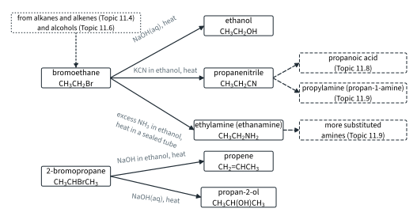
| Reaction | Example | Reagent and conditions | Type | Product |
|---|---|---|---|---|
| hydrolysis | bromoethane | NaOH(aq), heat | nucleophilic substitution (SN2) | ethanol |
| nitrile formation | bromoethane | KCN in ethanol, heat | nucleophilic substitution (SN2) | propanenitrile (one more C) |
| amine formation | bromoethane | excess NH3 in ethanol, heat in a sealed tube | nucleophilic substitution (SN2) | ethylamine (ethanamine) |
| elimination | 2-bromopropane | NaOH in ethanol, heat | elimination of HBr | propene |
| test for the halogen | any RX | NaOH(aq), heat; cool; acidify with dilute HNO3(aq); then AgNO3(aq); then NH3(aq) | hydrolysis, then precipitation | AgCl white, AgBr pale cream, AgI yellow; no precipitate from RF or chlorobenzene |
Additional information
- Beyond the syllabus: in ethanol some hydroxide ions react with the solvent to form ethoxide ions, CH3CH2O−, which are a stronger base than OH−. This is one reason why ethanolic NaOH favours elimination. ↩
- Beyond the syllabus: but-2-ene is the major product, because the more substituted alkene (more alkyl groups on the C=C) is the more stable one (Zaitsev's rule). ↩
- Beyond the syllabus: in practice SN1 reactions often give slightly more of the inverted product than the other, because the departing Br− ion briefly shields one face of the carbocation. 9476 expects the simple answer: racemisation. ↩
- Beyond the syllabus: sulfuric acid is not used either: silver sulfate is only sparingly soluble and can precipitate from concentrated solutions. ↩
- Beyond the syllabus: ODP compares the ozone destroyed by a given mass of a gas with that destroyed by the same mass of CCl3F (ODP 1). GWP compares the warming caused by a given mass of a gas over 100 years with that caused by the same mass of CO2 (GWP 1). ↩